Guion del video DAFI
Meta: 4:45 (límite 5:00). Narrador: Francisco. 15 escenas.
- Problema (30 s)
- Flujos (180 s)
- Decisión técnica (27 s)
- Uso del agente (25 s)
- Qué haríamos diferente (23 s)
Escena 0. El problema
En pantalla
pantalla de entrada de DAFI.
Narración
Cuando una familia le escribe a su médico por mensaje, la información llega incompleta: falta la temperatura, desde cuándo empezó o qué alergias tiene la persona, y el médico tiene que preguntarlo todo otra vez. DAFI ordena esa información antes de que llegue al médico. No diagnostica ni atiende emergencias; la conclusión siempre la escribe un profesional. En esta demo usamos datos ficticios y dos ventanas: María, que cuida a su familia, y la doctora Laura Méndez.
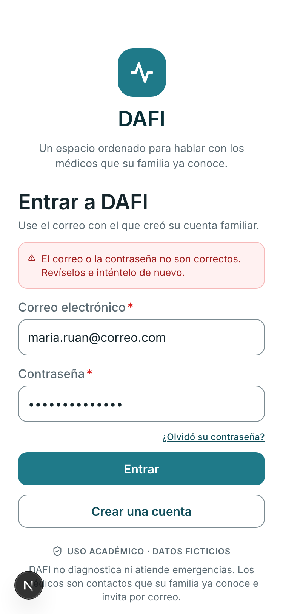
Escena 1. Contraseña mal escrita y entrada
Acción
escribir el correo de María con una contraseña incorrecta, pulsar «Entrar», leer el mensaje; corregir y entrar.
Narración
María escribe mal su contraseña. El backend responde 401 y la pantalla le dice que el correo o la contraseña no son correctos, sin sacarla de ahí. Corrige y entra.
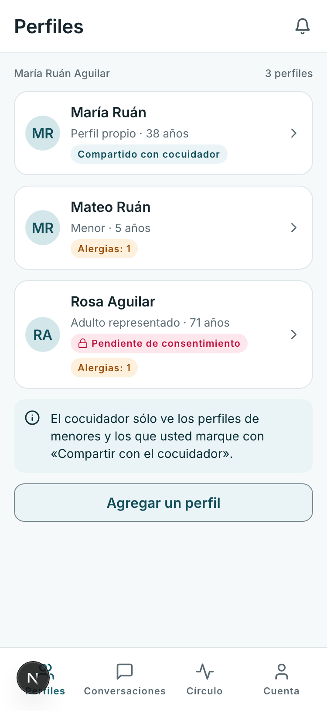
Escena 2. Los 3 perfiles
Acción
mostrar la lista de perfiles.
Narración
Estos tres perfiles vienen de la base de datos: el suyo, el de Mateo, de cinco años, y el de Rosa, una adulta a su cargo.
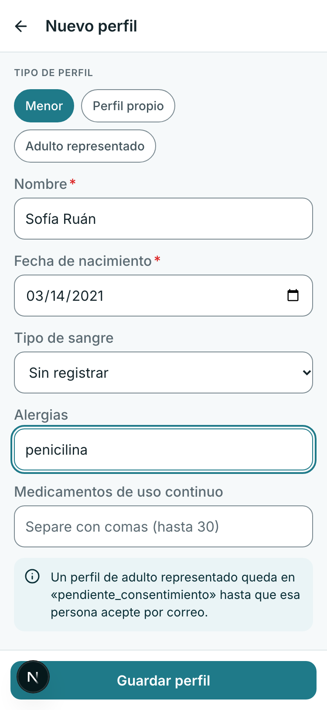
Escena 3. Crear un perfil
Acción
«Agregar un perfil»; nombre «Sofía Ruán», fecha de nacimiento, alergia «penicilina»; «Guardar perfil».
Narración
Agrega un perfil nuevo para Sofía, con su fecha de nacimiento y una alergia a la penicilina, y lo guarda.
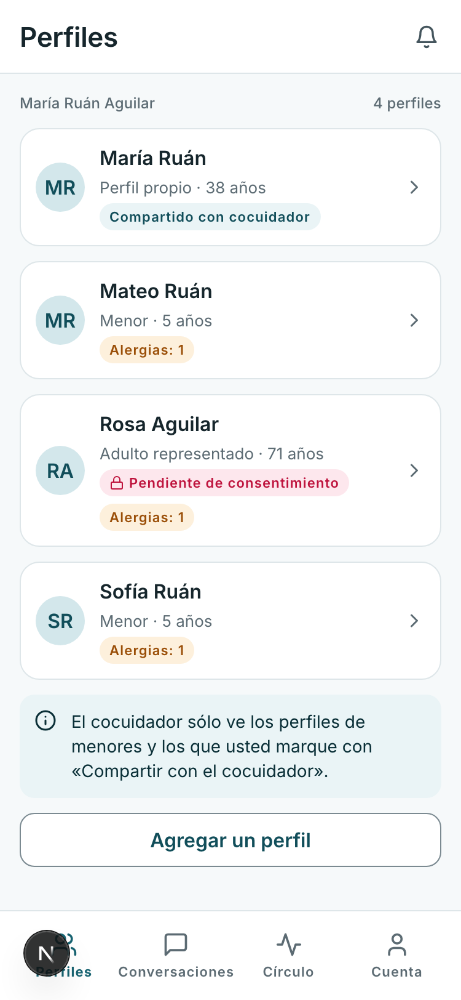
Escena 4. El perfil en la lista
Acción
la lista muestra a Sofía.
Narración
Sofía ya aparece en la lista.
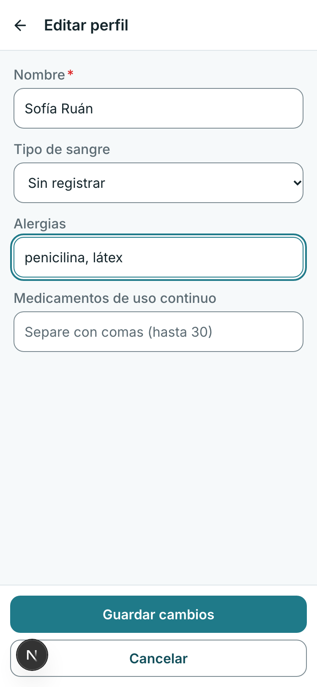
Escena 5. Editar alergias
Acción
abrir a Sofía, «Editar perfil», cambiar alergias a «penicilina, látex», «Guardar cambios».
Narración
María recuerda otra alergia. Abre el perfil, agrega el látex y guarda; el cambio se ve de inmediato.
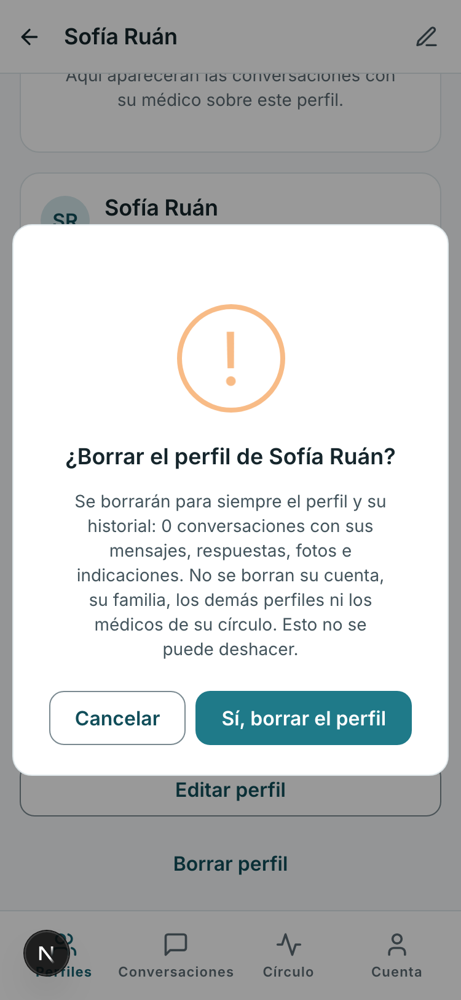
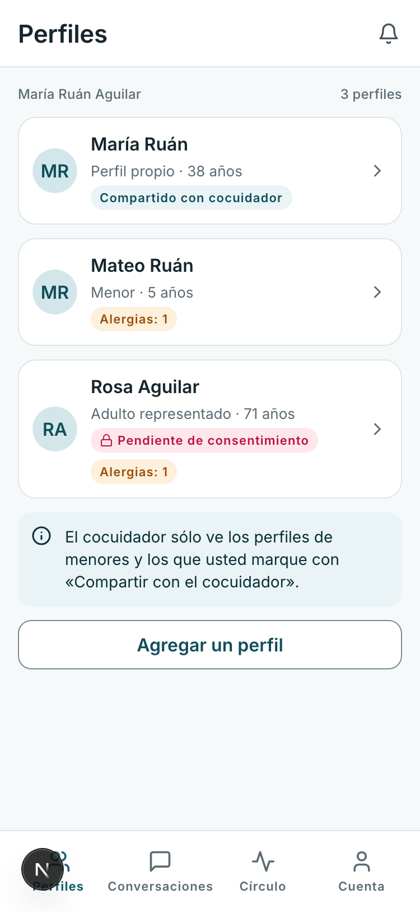
Escena 6. Borrar con confirmación
Acción
«Borrar perfil»; leer el aviso; «Sí, borrar el perfil»; la lista vuelve a 3.
Narración
Si se equivocó, puede borrarlo. Antes de hacerlo, DAFI le dice qué se borra y qué no, y que no se puede deshacer. Confirma y la lista vuelve a sus tres perfiles.
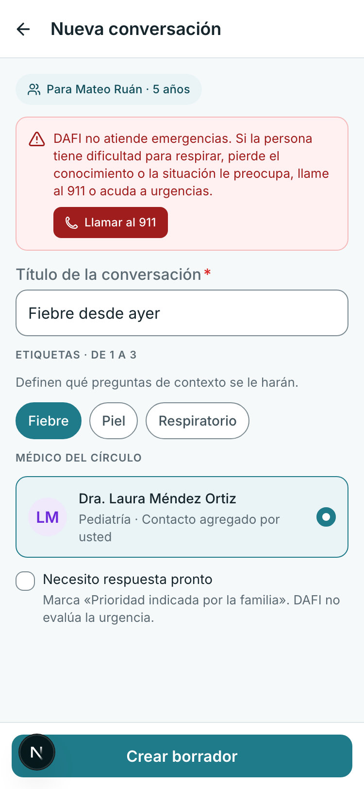
Escena 7. Nueva conversación para Mateo
Acción
abrir a Mateo, «Nueva conversación»; título «Fiebre desde ayer», etiqueta «Fiebre», médica «Laura Méndez Ortiz»; «Crear borrador». («Necesito respuesta pronto» es opcional.)
Narración
Mateo tiene fiebre desde ayer. María abre una conversación desde su perfil, le pone título, marca la etiqueta «Fiebre» y elige a la doctora Méndez, que ya está en el círculo de la familia. Todavía no se envía nada: queda como borrador.
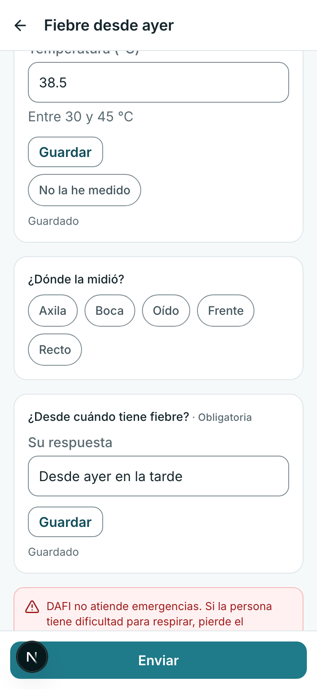
Escena 8. Preguntas de contexto y envío
Acción
temperatura «38.5», «Guardar»; «¿Desde cuándo tiene fiebre?» → «Desde ayer en la tarde», «Guardar»; «Enviar».
Narración
Por la etiqueta «Fiebre», DAFI le hace las preguntas que la médica haría de todos modos: la temperatura más alta y desde cuándo empezó. Cada respuesta se guarda por separado y el botón de enviar se activa hasta que las obligatorias están contestadas. También le recuerda que DAFI no atiende emergencias. María envía.
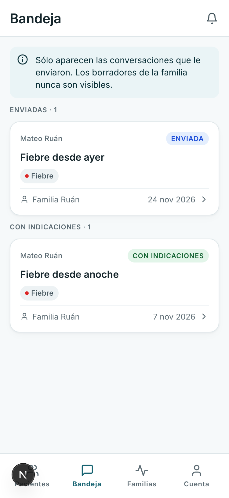
Escena 9. Bandeja de la médica
Acción
cambiar a la ventana de incógnito; entrar como la Dra. Méndez; señalar la conversación en «Enviadas».
Narración
En la otra ventana entra la doctora Méndez. Su bandeja agrupa las conversaciones por estado, y la de Mateo aparece en «Enviadas».
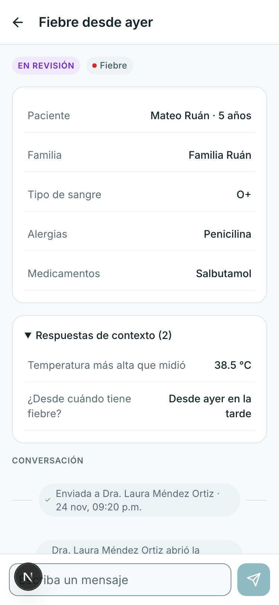
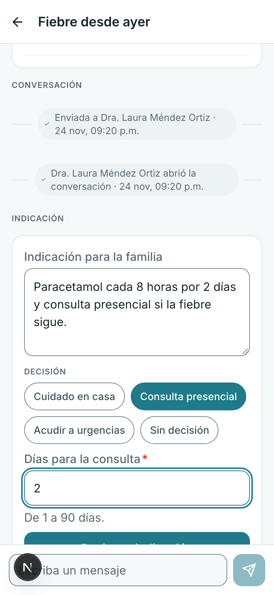
Escena 10. La médica registra una indicación
Acción
abrir la conversación (estado «En revisión»); mostrar el perfil y las respuestas de contexto; «Registrar indicación»; texto «Paracetamol cada 8 horas por 2 días y consulta presencial si la fiebre sigue.», decisión «Consulta presencial», 2 días; registrar.
Narración
Al abrirla, la conversación pasa a «En revisión» y la familia lo ve. La doctora tiene a la vista la edad de Mateo, sus alergias y las respuestas de María, sin haber preguntado nada. Registra su indicación: el texto, la decisión de consulta presencial y en cuántos días. Esto es lo que distingue a DAFI: la conclusión la escribe la médica y DAFI solo ordena la información.
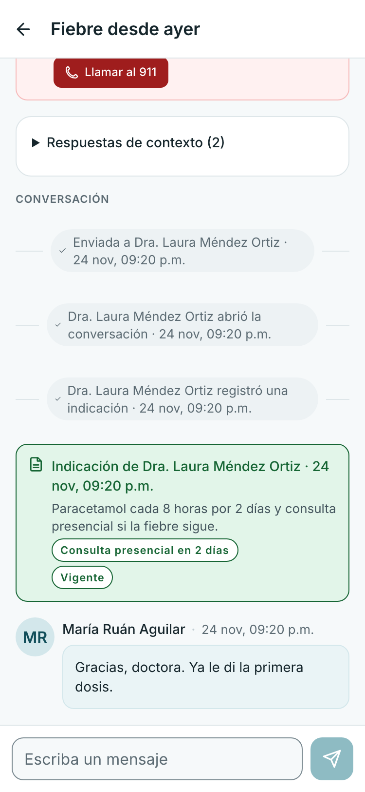
Escena 11. María ve la indicación y contesta
Acción
volver a la ventana de María; abrir la conversación; mostrar la indicación; escribir «Gracias, doctora. Ya le di la primera dosis.» y enviar.
Narración
María abre el hilo y encuentra la indicación marcada como vigente, con la consulta en dos días, además del registro de cuándo la doctora abrió la conversación. Le contesta que ya le dio la primera dosis.
Escena 12. Decisión técnica
En pantalla
tabla de pruebas del README o el archivo del contrato.
Narración
El frontend está en Next.js y el backend en Express, que venía fijado por la especificación de requisitos, con PostgreSQL como base de datos. Los dos lados se construyeron contra un mismo contrato OpenAPI, que define cada ruta y cada código de error, como el 401 del inicio. La demo corre en local; no hay despliegue público.
Escena 13. Uso del agente
En pantalla
la lección L-26 en LESSONS.md o la lista de PR fusionados.
Narración
En la última semana un agente de IA escribió el código y las pruebas, y cada tarea llegó como un PR que yo revisé y fusioné: 23 en tres días. No bastó con las pruebas automáticas. En la pantalla de crear cuenta, a ancho de teléfono, el mensaje de error quedaba tapado por la cabecera y la prueba pasaba igual; lo detectó una captura de pantalla.
Escena 14. Qué haríamos diferente
En pantalla
el hilo de María con la indicación.
Narración
Conectaríamos una pantalla al backend desde el primer sprint, en lugar de dejar la integración para el final, y yo leería el diff completo de cada PR antes de fusionarlo. Quedan pendientes las invitaciones al círculo médico, las fotos y las notificaciones. Gracias.
Pendientes antes de grabar
- Ensayo cronometrado (meta 4:45). Si se pasa, recortar primero las escenas 4 y 12.
- Decidir quién narra cada parte: la actividad pide grabarlo en equipo.
- Elegir qué se muestra en pantalla en las escenas 12 y 13.
- El servidor de desarrollo de Next.js muestra un círculo «N» abajo a la izquierda; sale en la grabación y en casi todas las capturas.
- En la demo usar «Fiebre» o «Piel»: «Respiratorio» no tiene preguntas en el seed.